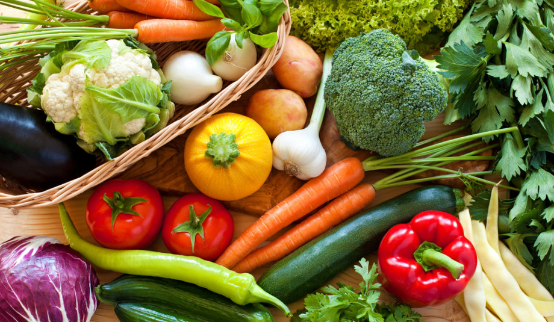
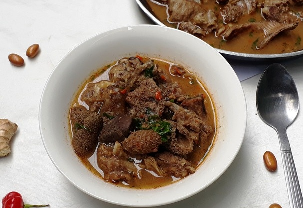
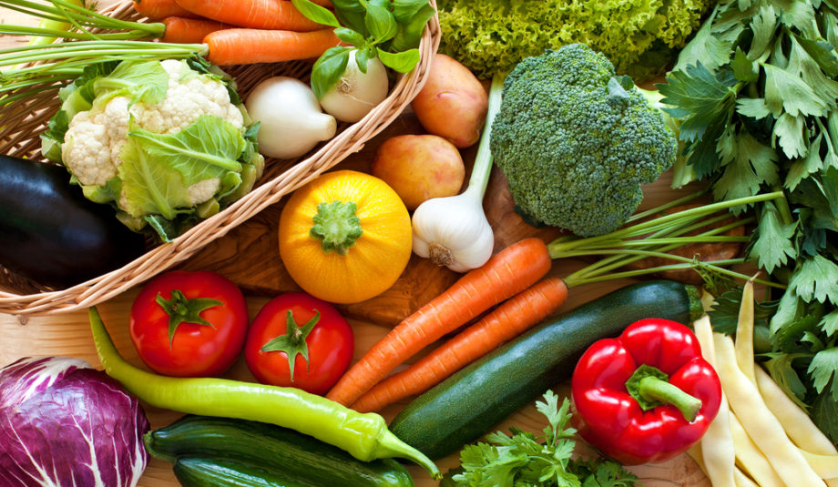
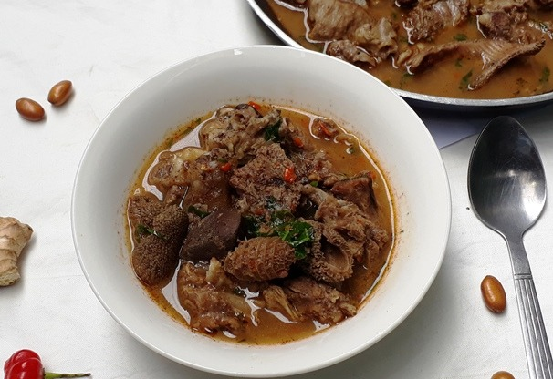

Carne vermelha, grãos, tubérculos, leite e leguminosas fazem parte da tradição e da história da culinária africana. Com a forte dominação europeia no continente africano, a sua gastronomia passou a incorporar temperos de outras regiões do mundo, como pimenta, alecrim, cravo, louro e canela.
A culinária nigeriana pratica refeições focadas de forma que muito pouco do animal vai para o lixo. Carnes populares incluem carne bovina, cabra, cordeiro, frango e peru, enquanto alguns dos vegetais mais consumidos são espinafre de Lagos, espinafre africano, folhas de água, folhas de abóbora e folhas de juta. Como outras cozinhas da África Ocidental, ele usa especiarias e ervas com óleo de palma ou amendoim para criar molhos e sopas de sabor profundo.
Sopa de Pimenta
O prato típico da Cozinha nigeriana é a sopa de pimenta que é feita de um molho picante que pode ser feita com pescados ou carne de cabra. As bananas fritas também são muito populares na Nigéria. A sopa nigeriana é a única que é consumida sem harmonizar com outros alimentos. É possível, no entanto, emparelhado com inhame cozido branco ou arroz.
 


